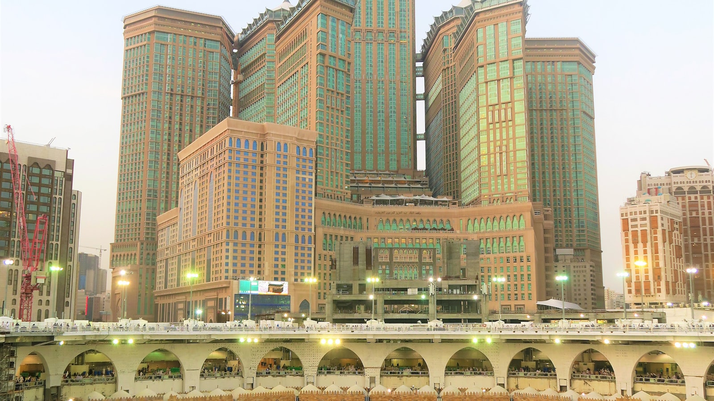
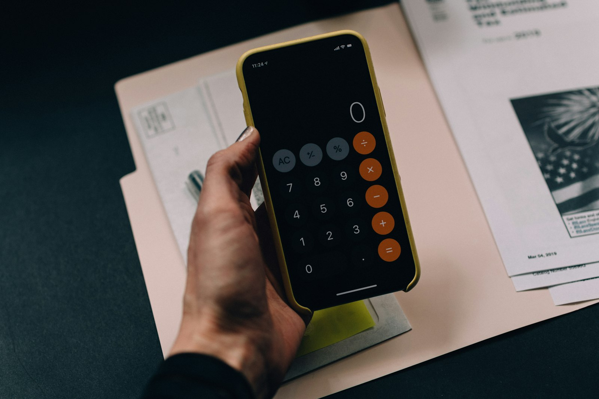

Bedah Transparansi Biaya: Mengapa Ada Paket Umrah 25 Juta dan 40 Juta?

Anda mungkin pernah mengalaminya: satu travel menawarkan umrah Rp25 juta, travel lain memasang harga Rp40 juta untuk durasi hari yang sekilas tampak sama. Iklannya sama-sama menampilkan Ka'bah, sama-sama menyebut hotel bintang lima, sama-sama berjanji "muthawif berpengalaman." Lalu di manakah selisih Rp15 juta itu bersembunyi?
Artikel ini bukan tentang mana yang "murah" atau "mahal" — melainkan tentang membaca komponen biaya umrah secara transparan. Karena begitu Anda memahami strukturnya, Anda tidak lagi memilih paket berdasarkan angka di halaman depan, melainkan berdasarkan apa yang benar-benar Anda dapatkan di Tanah Suci. Ini juga cara terbaik melindungi diri dari paket yang harganya "terlalu indah untuk menjadi kenyataan."
1Titik Awal: Biaya Referensi Kemenag (BPIU)
Sebelum masuk ke rincian, ada satu angka jangkar yang wajib Anda ketahui: Biaya Penyelenggaraan Ibadah Umrah (BPIU) referensi yang diterbitkan Kementerian Agama setiap tahun. BPIU bukan tarif seragam, tetapi batas bawah tarif yang wajar — jumlah minimum yang secara teknis dibutuhkan agar seluruh komponen wajib umrah dapat terpenuhi dengan standar dasar.
Untuk musim umrah 2025–2026, BPIU referensi berada di kisaran Rp23–24 juta untuk paket 9 hari dengan hotel jarak menengah, penerbangan transit, dan konsumsi standar. Angka ini menjadi tolok ukur pertama Anda: paket yang dijual jauh di bawahnya patut ditelusuri lebih dalam sebelum Anda membayar DP.
2Lima Komponen Utama Biaya Umrah
Setiap rupiah dalam paket umrah bermuara pada lima kategori pengeluaran. Memahami proporsi setiap komponen adalah dasar untuk membedakan paket yang sehat dari paket yang menyembunyikan sesuatu.
| Komponen | Porsi | Yang menentukan harga |
|---|---|---|
| Tiket penerbangan (PP Jakarta–Jeddah/Madinah) | 30–40% | Maskapai (Garuda, Saudia, Emirates, Etihad, Turkish, atau LCC), langsung atau transit, dan waktu keberangkatan (low/peak season). |
| Visa umrah & tasrih | 5–8% | Biaya visa Nusuk, tasrih shalat di Raudhah dan ziarah, biometrik, serta biaya service fee agen visa resmi. |
| Akomodasi hotel Makkah & Madinah | 25–35% | Bintang hotel (3/4/5), jarak ke Masjidil Haram/Nabawi, dan kepadatan pengisian kamar (quad/triple/double). |
| Transportasi darat & muthawif | 5–10% | Bus AC pariwisata, handling bagasi, city tour Makkah & Madinah, honor muthawif senior, dan tour leader. |
| Konsumsi, perlengkapan & handling | 10–15% | Frekuensi makan (2× atau 3× per hari, prasmanan/set-menu), koper, seragam, buku manasik, asuransi, biaya administrasi PPIU. |
Perhatikan: tiga komponen pertama (tiket, visa, hotel) rata-rata menyerap 60–80% dari total biaya. Di sinilah selisih paling besar antar paket biasanya lahir — bukan di kaus seragam atau tas koper yang sering ditonjolkan di brosur.
3Anatomi Paket 25 Juta vs 40 Juta
Untuk membuatnya konkret, mari kita bedah dua paket 9 hari yang mewakili kelas ekonomis dan kelas premium. Angka di bawah ini adalah estimasi rata-rata pasar musim 2025–2026 — bukan tarif Nahdi Tour secara spesifik, melainkan potret pasar untuk membantu Anda kalibrasi.
| Komponen | Paket Ekonomis (± Rp25 jt) | Paket Premium (± Rp40 jt) |
|---|---|---|
| Maskapai | Transit (Kuala Lumpur/Doha/Dubai), 1× transit | Direct flight (Garuda/Saudia) atau full-service dengan transit singkat |
| Hotel Makkah | Bintang 3–4, jarak 800–1.500 m dari Masjidil Haram, kamar quad | Bintang 5, jarak < 300 m (setaraf Jabal Omar/Hilton area), kamar double |
| Hotel Madinah | Bintang 3–4, jarak 300–600 m, kamar quad | Bintang 5, jarak < 150 m (halaman Nabawi), kamar double |
| Muthawif & TL | Muthawif lokal, 1 tour leader per rombongan besar (40+ pax) | Muthawif senior berpengalaman, TL rasio 1:20 pax, pendampingan Raudhah |
| Konsumsi | 2× makan/hari, katering box atau prasmanan sederhana | 3× makan/hari, prasmanan nusantara di hotel |
| City tour & ziarah | Standar (Jabal Nur, Jabal Rahmah, Masjid Quba, Uhud) | Plus museum, Thaif atau Jeddah half-day, dokumentasi profesional |
| Perlengkapan | Koper 24", seragam, buku doa, kain ihram pria | Koper 28" premium, seragam batik, mukena/ihram katun, tas selempang, air Zamzam ekstra |
Selisih Rp15 juta itu tidak lenyap begitu saja — ia terserap pada hal-hal yang sangat terasa saat Anda berada di Tanah Suci: langkah kaki dari hotel ke Masjidil Haram, waktu istirahat setelah tawaf, kualitas pendampingan saat sakit atau tersesat, dan makanan yang menghindarkan Anda dari food fatigue.
Yang mahal dari umrah bukan Ka'bah-nya — Ka'bah gratis untuk semua. Yang mahal adalah waktu, tenaga, dan ketenangan yang Anda beli agar bisa fokus beribadah di sekitarnya.

4Faktor Pembeda yang Paling Sering Diabaikan
a. Jarak hotel ke Masjidil Haram — bukan sekadar meter
Iklan sering menulis "hotel dekat Masjidil Haram" — tetapi 300 meter dan 1.500 meter memberikan pengalaman yang jauh berbeda. Bayangkan Anda pulang tawaf pukul 2 pagi dalam kondisi lelah, atau harus mengejar 5 waktu shalat berjamaah selama 5 hari di Makkah. Setiap 500 meter jarak tambahan berarti tambahan 10–15 menit jalan kaki di suhu 35–40°C, atau opportunity cost waktu ibadah yang hilang.
b. Kelas kamar: quad vs double
Kamar isi 4 orang (quad) lebih hemat, tetapi ruangnya sempit dan waktu di kamar mandi menjadi rebutan pagi hari. Kamar isi 2 (double) memberi kenyamanan istirahat yang berbeda — dan ini sering menjadi selisih Rp2–4 juta per orang untuk paket 9 hari.
c. Muthawif senior vs muthawif baru
Muthawif yang sudah 10+ tahun mendampingi jamaah tahu jalur pintas untuk Sa'i, kapan waktu terbaik ke Raudhah, di mana toilet terdekat saat kondisi darurat, dan bagaimana menangani jamaah lansia yang kelelahan. Ini tidak terlihat di brosur — tetapi menentukan ketenangan Anda selama 9 hari.
d. Direct flight vs transit
Penerbangan langsung Jakarta–Jeddah/Madinah rata-rata 9,5 jam. Penerbangan transit bisa 15–20 jam total dengan layover di Kuala Lumpur, Doha, atau Dubai. Bagi jamaah muda ini mungkin bisa ditolerir, tetapi bagi lansia atau jamaah dengan penyakit tertentu, jam-jam tambahan itu berarti risiko kesehatan yang nyata.
5Red Flag: Kapan Harga Murah Menjadi Tanda Bahaya
Sejarah industri umrah Indonesia mengajarkan pelajaran keras. Kasus First Travel dan Abu Tours menjadi pengingat bahwa harga di bawah biaya nyata hanya bisa dipertahankan dengan salah satu dari tiga cara: skema pembiayaan berlapis (dana jamaah baru menutupi keberangkatan jamaah lama), menahan keberangkatan, atau memangkas komponen wajib. Ketiganya berujung pada kerugian jamaah.
Beberapa tanda peringatan yang perlu Anda waspadai:
- Harga di bawah Rp20 juta untuk paket 9 hari — tiket dan visa saja sudah menyerap Rp12–15 juta.
- Skema "member get member" atau bonus untuk setiap rekrutan — mirip pola pemasaran berjenjang, bukan penjualan paket ibadah.
- Tidak ada nama hotel spesifik di kontrak — hanya klaim "hotel bintang lima setaraf X."
- DP dibayar ke rekening pribadi, bukan rekening perusahaan atas nama PPIU.
- PPIU tidak terdaftar di SIPATUH Kemenag — sistem informasi resmi penyelenggara umrah yang bisa Anda cek publik.
- Waktu keberangkatan tidak dijadwalkan tegas — hanya disebut "menunggu kuota terkumpul."
6Cara Membaca Invoice Paket Umrah Secara Kritis
Invoice atau quotation yang sehat harus memuat rincian eksplisit. Bila Anda menerima kertas hanya bertuliskan "Paket Umrah 9 Hari — Rp30.000.000 all-in," itu tanda pertama bahwa Anda belum diberi transparansi. Minta versi rincinya sebelum akad. Ini yang perlu Anda lihat:
- Maskapai + rute + tanggal — bukan sekadar "penerbangan internasional".
- Nama hotel di Makkah & Madinah — lengkap dengan bintang, alamat, dan jarak ke Masjidil Haram/Nabawi.
- Tipe kamar — quad, triple, atau double, dan skema upgrade bila ada.
- Jumlah makan per hari dan jenisnya (prasmanan/box).
- Daftar ziarah dan city tour — mana yang termasuk paket, mana yang optional.
- Isi perlengkapan — koper, seragam, kain ihram, mukena, tas selempang, buku manasik.
- Cakupan asuransi — nama perusahaan, plafon, dan jenis pertanggungan.
- Termasuk / tidak termasuk — visa mahram (untuk wanita di bawah 45 tahun), tips, biaya kelebihan bagasi.
7Konteks Regulasi: Yang Melindungi Anda Sebagai Jamaah
Sejak berlakunya UU Nomor 8 Tahun 2019 tentang Penyelenggaraan Ibadah Haji dan Umrah — yang diperbarui melalui revisi terbaru — kerangka perlindungan jamaah semakin kuat. Setiap PPIU wajib memiliki izin operasional dari Kemenag, terdaftar di sistem SIPATUH (Sistem Informasi Pengawasan Terpadu Umrah dan Haji Khusus), dan mengikuti prinsip 5 Pasti: pasti travel resmi, pasti tiket, pasti visa, pasti hotel, dan pasti jadwal berangkat.
Bagi Anda calon jamaah, ini bermakna praktis: sebelum menyerahkan uang, cek nama travel di SIPATUH atau portal resmi Kemenag. Bila tidak muncul, atau muncul dengan status non-aktif, hentikan proses dan cari travel lain.
8Kesimpulan: Membeli Ibadah, Bukan Sekadar Perjalanan
Selisih Rp25 juta dan Rp40 juta bukan tentang "yang satu jujur, yang lain menipu" — tetapi tentang komposisi berbeda dari komponen yang sama. Yang tidak sehat adalah paket yang harganya di bawah biaya nyata dan tidak transparan dari mana kekurangannya ditutup. Yang sehat, entah 25 atau 40 juta, selalu bisa dibuka rinciannya dan setiap angka bisa dijelaskan.
Karena Anda tidak sedang membeli tiket ke destinasi wisata — Anda sedang membeli waktu terbaik dalam hidup Anda untuk berhadapan dengan Ka'bah dan memuliakan Rasulullah ﷺ di Raudhah. Membaca rincian biaya bukan sikap perhitungan, melainkan bentuk ihtimam — kehati-hatian yang dianjurkan agama.
Jika Anda sedang membandingkan beberapa paket dan ingin diskusi netral tanpa tekanan penjualan, konsultasikan rencana umrah Anda bersama tim Nahdi Tour. Kami akan membantu Anda membaca invoice paket manapun — termasuk dari travel lain — agar keputusan Anda berdasar informasi utuh. Anda juga bisa memperkaya konteks dengan membaca panduan 7 cara memilih travel umrah yang resmi dan terpercaya dan analisis biaya dan risiko umroh mandiri.
Pertanyaan yang Sering Diajukan
Berapa biaya minimum umrah yang wajar dan aman?
Kisaran Rp23–24 juta untuk paket 9 hari mengacu pada BPIU referensi Kemenag musim 2025–2026. Di bawah itu, hampir mustahil menutupi semua komponen wajib tanpa memotong salah satu.
Mengapa paket 25 juta dan 40 juta bisa berselisih Rp15 juta?
Terutama dari tiga hal: bintang & jarak hotel, direct vs transit flight, dan tipe kamar. Sisanya dari kualitas muthawif, konsumsi, dan durasi.
Apa saja komponen yang harus tercantum di invoice?
Tiket dengan maskapai & rute, visa & tasrih, nama hotel + jarak, tipe kamar, transportasi darat, jumlah makan, muthawif & TL, perlengkapan, dan asuransi.
Apakah paket promo di bawah 20 juta aman?
Sangat jarang. Waspadai skema piramida atau penundaan keberangkatan. Pastikan travel terdaftar aktif di SIPATUH Kemenag.
Bagaimana memverifikasi harga sebelum membayar?
Bandingkan dengan BPIU, cek jarak hotel di Google Maps, verifikasi maskapai, cek izin PPIU di SIPATUH, dan minta rincian tertulis sebelum DP.
Penutup
Transparansi biaya adalah bentuk penghormatan pertama sebuah travel kepada calon jamaahnya — sebelum bicara tentang muthawif senior, hotel bintang lima, atau air Zamzam ekstra. Ketika Anda memahami setiap komponen, Anda tidak lagi terjebak pada angka besar di halaman depan brosur, dan Anda berjalan menuju Tanah Suci dengan tenang: karena Anda tahu persis apa yang Anda beli, dan mengapa harganya begitu. Semoga Allah memudahkan langkah kita menuju rumah-Nya, dengan niat yang lurus dan bekal yang cukup. Aamiin.